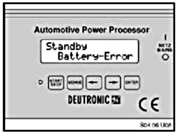
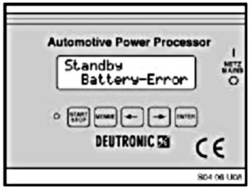
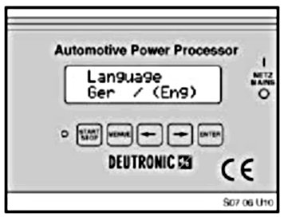
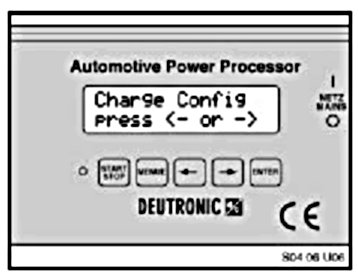
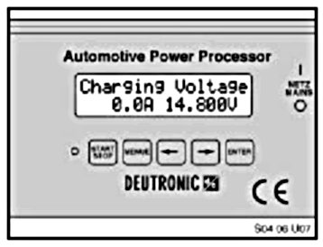
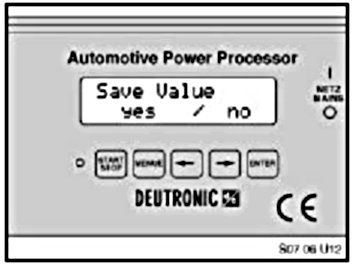
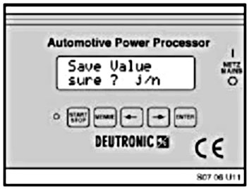

Battery - Charging Voltage Change
SI B 04 27 06October 2006
Tools and Equipment
Technical Service
SUBJECT
Vehicle Battery Charging Voltage Change
MODEL
All
INFORMATION
To improve the quality of battery charging on BMW vehicles, the charging voltage on approved BMW chargers has been increased to 14.8 volts. This means that the Deutronic DBL430 battery charger must have its charging voltage changed to 14.8 volts. If the menu choice "Factory Settings" is selected at any time, the factory default of 14.4 volts is set. In this case, the procedure that follows must be performed again.
PROCEDURE
Follow the following procedure to set the Deutronic DBL430 charging voltage to 14.8 volts. The battery charge must not be connected to a vehicle when performing this procedure. Only connect the 110 volt (AC) line to a suitable outlet.

1. Remove the 12 volt DC cables from a battery/vehicle if so connected
2. Plug the 110 volt line to suitable outlet
3. Switch the charger on using the main power switch on the front. The message "Battery Error" is displayed.

4. Press and hold the 2 arrow buttons (< >) for at least 3 seconds.
5. Release the buttons, the Language display screen appears.
6. Use the arrow buttons (<>) to put the parentheses around "(Eng)".

7. Press the ""menu" button ~2 times to display the "Charge Config" Menu.

8. Select this menu with the right arrow button (>).
9. Change the charging voltage using the arrow buttons. The voltage must be changed to 14.8 volts.

10. Confirm the new setting with the "Enter" button.

11. Confirm the "Save Value" question with the left arrow (<) button.

12. Confirm save (again) with the left arrow (<).
13. Turn charger off using the main power switch.
14. The charger may be used at this time. This procedure need only to be performed one time unless the "Factory Settings" option is restored.

Disclaimer